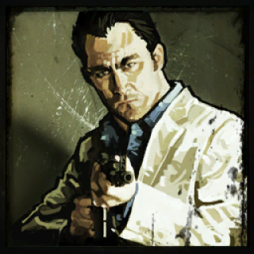
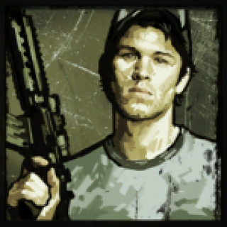
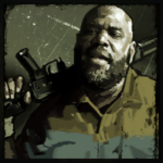

Les survivants
Même s'ils sont toujours quatre, les protagonistes survivants sont différents de ceux du premier opus, Left 4 Dead. On incarne désormais Rochelle, Nick, Ellis et/ou Coach.
1. Rochelle: 29 ans. Reconnaissable à son tee-shirt rose avec les visages des membres du groupe Depeche Mode, originaire de Cleveland dans l'Ohio, c'est une assistante pour une chaîne de télévision. Lorsque l'infection se déclare à Savannah, elle y est envoyée afin de couvrir l’événement...
2. Nick: 35 ans. Habillé en costume blanc chic, c'est un féru de jeu d'argent et ex-détenu. Il est originaire du Midwest mais passe son temps à se déplacer. Au départ, il n'a pas confiance en ses camarades mais apprends à les connaître au fur et à mesure.
3. Ellis: 23 ans. Le personnage le plus bavard des survivants est aussi le plus jeune. Il exerce la profession de mécanicien. Il est habillé d'un Tee-shirt jaune et porte une casquette de baseball bleue. C'est le personnage le plus optimiste du groupe et il n'hésite pas à faire quelques blagues même quand la situation ne le permet pas.
4. Coach: 44 ans. Après une blessure au genou, il a dû abandonner sa carrière sportive et est devenu professeur d'éducation physique. Il est originaire de Savannah en Géorgie. Il dirige le groupe et se montre prévenant.
Comme dans le premier opus, des acteurs ont prêté leur visage aux personnages : Darnell Rice (Coach), Taymour Ghazi (Nick), Shanola Hampton (Rochelle) et Jesy McKinney (Ellis).
1.

2.

3.

4.
